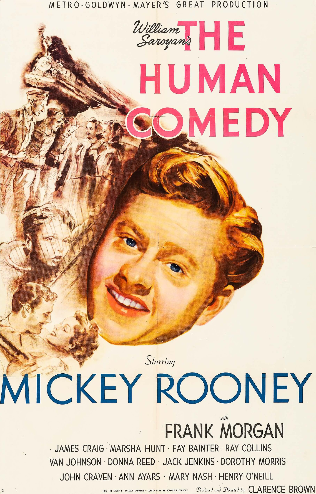

The Human Comedy
16th Academy Awards
(Oscars 1944)
5 Nominations, 1 Award
| Nominations | ||
|---|---|---|
| Category | Nominees | Result |
| Outstanding Motion Picture | Metro-Goldwyn-Mayer | Nominated |
| Actor | Mickey Rooney | Nominated |
| Directing | Clarence Brown | Nominated |
| Writing (Original Motion Picture Story) | William Saroyan | Won |
| Cinematography (Black-and-White) | Harry Stradling | Nominated |